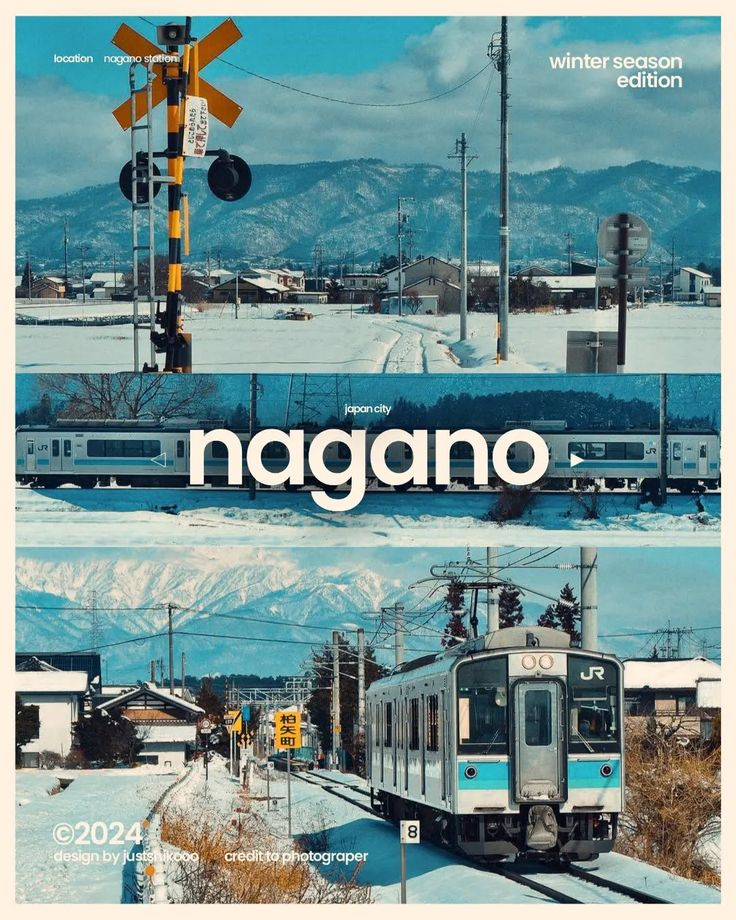
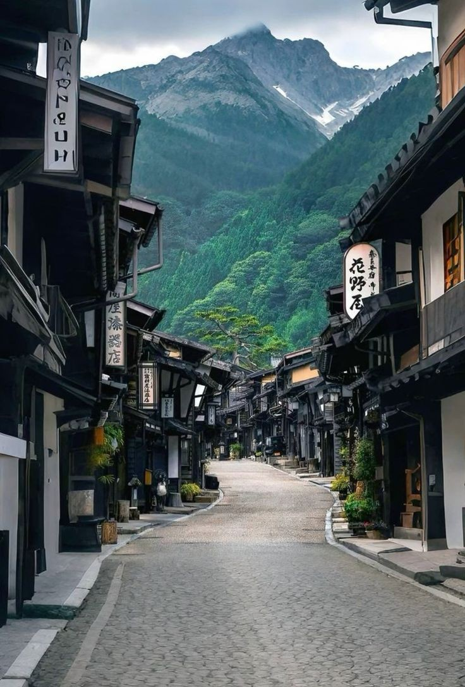

Japão para Visitantes
Um guia introdutório para te guiar em uma jornada de descobertas pelo Japão.
Um guia introdutório para te guiar em uma jornada de descobertas pelo Japão.

Nagano, localizada na região central do Japão, é uma cidade conhecida por seu ambiente montanhoso, clima mais frio e forte conexão com a natureza. Cercada pelos Alpes Japoneses, Nagano oferece um contraste significativo em relação às grandes metrópoles do país, destacando-se por seu ritmo mais tranquilo e pela proximidade com paisagens naturais preservadas. A cidade ganhou projeção internacional ao sediar os Jogos Olímpicos de Inverno de 1998, evento que impulsionou sua infraestrutura e visibilidade global. Desde então, Nagano consolidou-se como um destino importante para esportes de inverno, especialmente esqui e snowboard, atraindo visitantes durante os meses mais frios. O clima é um dos aspectos mais marcantes da região. Os invernos são rigorosos, com neve frequente e temperaturas baixas, enquanto os verões tendem a ser mais amenos em comparação com outras partes do Japão. As estações são bem definidas, e cada período do ano proporciona uma experiência distinta, seja pela neve no inverno ou pelas paisagens verdes no verão. A mobilidade em Nagano é mais limitada quando comparada a grandes centros urbanos, mas ainda eficiente. Linhas de trem conectam a cidade a regiões importantes, incluindo Tóquio, enquanto ônibus locais auxiliam no deslocamento interno. Por ser uma área menos densa, o planejamento de rotas é mais relevante para visitantes. Culturalmente, Nagano mantém fortes tradições ligadas ao interior do Japão. A cidade e seus arredores preservam costumes antigos, festivais sazonais e práticas religiosas, refletindo uma identidade mais próxima das raízes históricas do país. O estilo de vida tende a ser mais calmo, com menor influência do ritmo acelerado das grandes cidades. A culinária local também apresenta características próprias, muitas vezes adaptadas ao clima frio. Pratos quentes e substanciais são comuns, além de especialidades regionais como o soba (macarrão de trigo sarraceno), bastante tradicional na região. O custo de vida em Nagano costuma ser mais acessível do que em grandes centros urbanos, especialmente em termos de hospedagem e alimentação. Isso, aliado ao ambiente mais tranquilo, torna a cidade uma opção interessante para quem busca uma experiência menos agitada no Japão. Outro aspecto relevante é a forte relação da cidade com o turismo natural. Montanhas, florestas e áreas rurais ao redor de Nagano oferecem oportunidades para atividades ao ar livre, como caminhadas, esportes de inverno e contemplação da paisagem. De forma geral, Nagano representa uma faceta mais serena e natural do Japão. A cidade combina clima diferenciado, tradição cultural e proximidade com a natureza, proporcionando uma experiência voltada ao equilíbrio, ao descanso e à apreciação do ambiente ao redor.

Nagano oferece uma variedade de pontos turísticos fortemente ligados à natureza, à espiritualidade e às tradições do interior do Japão, proporcionando uma experiência distinta das grandes cidades. Entre os locais mais importantes está o Templo Zenko-ji, um dos templos budistas mais antigos e significativos do país. O complexo atrai visitantes tanto pela sua relevância religiosa quanto pela arquitetura tradicional e atmosfera histórica. No campo das paisagens naturais, o Parque dos Macacos da Neve de Jigokudani é um dos destinos mais conhecidos, onde é possível observar macacos japoneses (snow monkeys) relaxando em fontes termais durante o inverno. A experiência é considerada única e bastante representativa da região. Para quem busca atividades ao ar livre, a região de Hakuba Valley é amplamente reconhecida por suas estações de esqui e snowboard, tendo sido utilizada durante os Jogos Olímpicos de Inverno de 1998. No verão, a área também é utilizada para trilhas e outras atividades em meio à natureza. Outro destaque é o Castelo Matsumoto, localizado na província de Nagano. É um dos castelos originais mais bem preservados do Japão, conhecido por sua estrutura escura e arquitetura imponente. A região de Kamikochi oferece paisagens montanhosas, rios cristalinos e trilhas bem estruturadas, sendo um dos destinos mais procurados para caminhadas e contemplação da natureza nos Alpes Japoneses. Outro local relevante é o Lago Suwa, que apresenta uma paisagem tranquila e atividades sazonais, incluindo festivais e eventos tradicionais. Para experiências culturais e termais, Shibu Onsen é uma vila tradicional conhecida por suas casas de banho e ruas preservadas, proporcionando uma imersão no estilo de vida japonês mais antigo. Além disso, áreas como Nozawa Onsen combinam turismo de inverno com fontes termais, sendo bastante procuradas durante a temporada de neve. A diversidade de pontos turísticos em Nagano destaca sua forte conexão com a natureza e a tradição. A região oferece experiências que vão desde atividades esportivas até momentos de contemplação, mantendo uma identidade cultural preservada e integrada ao ambiente natural.